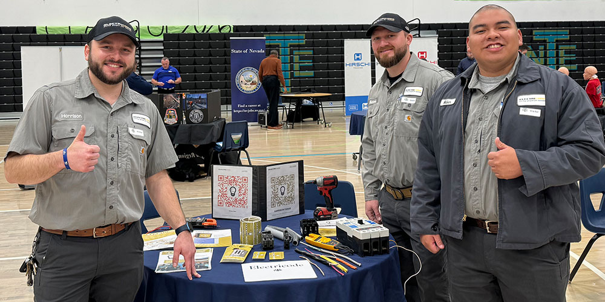

.png)
Our Story
The Sparkline Electrical Services team outside the workshop

Sparkline Electrical Services was founded in 2016 by a qualified electrician with a simple goal: to bring honest, reliable electrical work to Cape Town homeowners. What started as a one-person operation has grown into a small team of four registered electricians serving homes, rental properties, and small businesses across the greater Cape Town area.
Our Mission
To deliver safe, reliable, and code-compliant electrical work with honest pricing and minimal disruption to our clients' homes and businesses.
Our Vision
To become the most trusted electrical services provider in the Western Cape for residential and small commercial clients.
Our Team
All of our electricians are registered with the relevant South African trade bodies and carry up-to-date qualifications. We issue a Certificate of Compliance (CoC) on every job we complete, giving homeowners and landlords peace of mind.
- 4 registered electricians
- Over 9 years in operation
- Fully insured and CoC-compliant